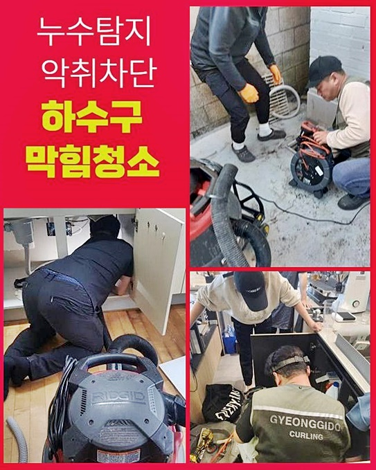
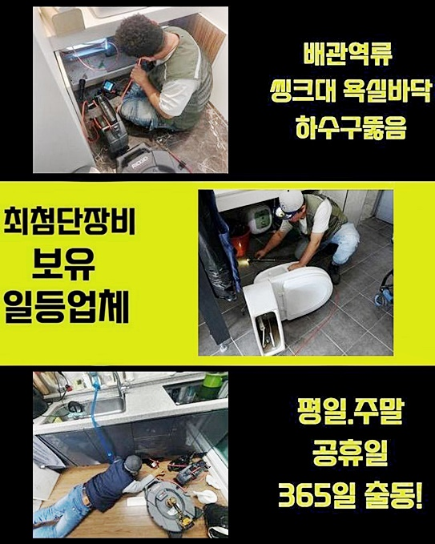
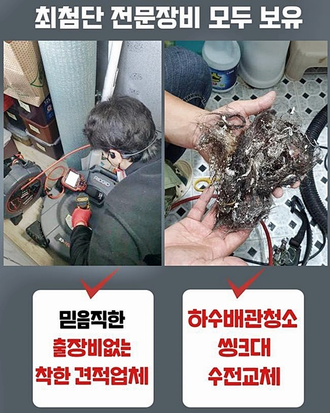
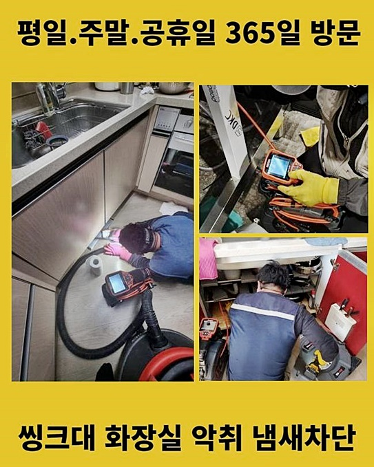
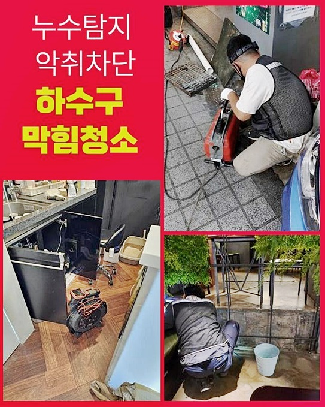
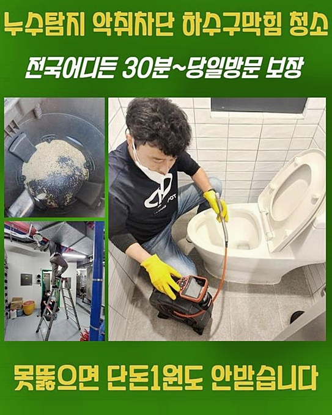
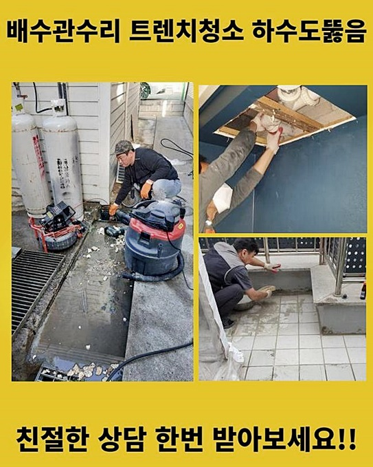

🏠 안중읍화장실뚫음 세교동 악취차단 물샘전문업체
용인시 처인구 배관막힘 전문 시공 후기

📋 작업 개요
- 위치: 용인시 처인구, 수원시 영통구, 화성시 동탄
- 서비스 유형: 배관막힘, 고압세척, 내시경점검
- 작업 일시:
- 업체명: 하수구수사대 (010-5615-2118)
🔍 문제 상황
안중읍화장실뚫음 세교동 악취차단 물샘전문업체
오늘 저희는 하수구에 이상이 발생했을 때 전문팀 고르는 방법을 설명해드릴게요
전문인 선정 시에 생각해야하는 부분은 기술자의 하수배관막힘 욕실 배수설비막힘의 전문지식과 믿음직함입니다
배수관의 문제점은 빠르고 확실한 조치가 요구되어 전문성과 노하우가 있는 기술자를 채택해야하죠
둘째는 비용과 정비조건들을 살펴봐야합니다
작업내용과 가격은 중요하더라도 더많은 서비스들이나 보증조건등을 검토하여 전체적인 수리비를 파악하는 방법이 요구됩니다
최종적으로는 기존 소비자의 의견과 평가들을 주의깊게 보는것이 도움이됩니다
먼저 이용한 고객의 이용기를 근거로 전문가의 작업 퀄리티와 전문성을 확인가능하며 이로인해 좀 더 슬기로운 결정들을 가능하게합니다
그러니까 하수도막힘 문제가 생길 땐 최상의 하수관로막힘 화장실 오수관막힘 숙련된 수리기사를 고르기 위해선 이런 항목들을 고려하여 선정하는 방법을 추천합니다
하수도 문제를 점검하고 안쪽을 검사를 수행하면서 적절한 대응을 하여 문제점을 고쳐나가며 의뢰자의 어려움 해결에 전력을 다할것입니다
우리업체의 수리절차들은 체계적이며 다양한 경력들과 전문지식으로 의뢰자의 어려움을 처리할 것을 보장해드리겠습니다
노폐물 상당하게 쌓여있는 곳에는 고압 물세척을 진행했고 썩션기구를 활용해 주요 장애요인을 제거하였습니다
아울러 전문도구들을 이용하여 퇴적물과 세밀한 찌꺼기들을 고압 세정했어요
이와같이 청소함으로써 고장수리가 이뤄졌고 파손을 막으려면 정기적으로 세척이 필요함을 기억해주시기 바랍니다

🔎 원인 분석
💡 전문가 진단: 정밀 진단 장비를 사용하여 슬러지의 고착 여부를 판명하고 타격/세척 작업을 실시했습니다.
무시하면 더 심각한 문제상황이 생길수 있어서 규칙적인 세척이 핵심입니다
그렇기 때문에 우리는 근무시간을 특정하지 않아 하루종일 언제나 조치할 수 있게 준비를 갖추고 있습니다
이번에 저희업체가 해결한 현장에서는 새벽시간에 확인된 배수장애로 인해 욕실에 들어갔을때 심한냄새 때문에 사안이 심각하다는 점을 직감했습니다
수리를 할때는 적정한 강도를 적용하여 분쇄 절차를 실시해서 오물들을 꼼꼼히 분쇄한 후 석션장비를 사용하여 신중히 제거해야합니다
반복실행하면서 이물질 배출절차를 마치고나선 내시경기구를 투입해 하수구안을 면밀히 점검해요
말끔해진 하수도 내부의 진단사항들을 이용자에게 알리고
마지막으로 세면볼에 물을 충분히 넣어 물배출 검사를 이용해 막힘없는 배수작용이 되는지 살펴봅니다
정밀한 조치를 통해 배수장애 상황을 수리했어요
주로 욕실에서 배수장애 상황이 발생하게 되면 일정에 불편함을 유발할 수 있어요
이와같은 상황에는 원인들을 알아내고 긴급히 조치해야하죠 그러나 이유를 확인하고 처리하는 것은 간단하지만은 않죠
그래서 배수관막힘 전문인의 도움이 필요한것입니다
우리는 전문적인 장치와 도구들을 동원하여 오물들을 정리하고 배수관 정리업무를 실행했어요
석션기기 청소장비 파쇄기등을 이용하여 오물을 처리했으며 하수도 내부를 청소했습니다
우선은 수도꼭지를 틀어서 배수장애 상태를 확인하였고 자세히 문제를 조사하였습니다

🔧 작업 과정
다른 전문가들이 내방했으나 처리가 안되다 보니 저희 업체에 상담을 요청하셨다고 했는데
저희들은 막힘처리에 해결하지 못하면 비용을 청구드리지 않는 메뉴얼을 시행하는 중이므로 염려하지 않으셔도 좋을 것입니다
순조롭게 처리하고 나면 재점검 필요시 무상수리를 받을수 있게 지원하여드리겠습니다
배수구 고장은 욕실 사용시에 불편함을 주며 일상에 상당한 영향들을 초래할 수 있어요
그러므로 신속한 조치를 해야하며 하수관역류 욕실 배수설비막힘 전문팀의 도움이 필요하게 됩니다
우리전문가는 소비자들의 어려움을 최소화하며 원만하게 스케줄을 관리하도록 최상의 노력을 기울입니다
언제라도 수리가 필요할땐 우리전문가에게 연락을 주세요
연중무휴 연결 가능한데다가 주말 방문수리도 지원합니다
상쾌한 환경들을 만들어 나가려고 전력을 다하는 우리전문가와 같이 염려없는 삶을 보내시기 바랍니다
소변기 밑부분의 부속을 해체하니 소량의 오염이 보였지만 기본 원인은 그만큼 간단한 것이 아니었어요
그러므로 배수구 관속을 살펴봐야 했고 특수 장비를 사용해 배수구 안쪽에서 점검해봤습니다
확인결과 하수도 속안에 다량의 찌꺼기와 이물질이 누적되었고 그것들이 배출을 지연시키는 요인이었어요
그리고나서 적합한 살균제나 클리닝제품을 활용해 배관을 말끔히 청소했습니다
이를 바탕으로 물흐름이 원활히 이루어지게 조치하였습니다
끝으로 의뢰인에게 하수관에 미세한 잔여물이나 오염원이 축적되지 않게 유의사항을 당부드렸습니다
문제를 처리하려고 내시경기구를 사용해 하수구안을 조사한결과 팔이 닿지 않는 위치에서 석회물질들이 강하게 붙어있는 모습을 확인했어요
석회질은 많은 찌꺼기들이 모이고 엉겨붙어 배수구를 막아버리는 물질들로 관리를 안하면 하수관을 막아버리거나 하수관에 피해를 초래할수 있습니다
그러니까 석회물질들을 정리하기로 했으며 실시해야했으므로 플렉스 샤프트기계를 이용했습니다
이 도구를 사용해서 석회질을 분쇄하고 완벽하게 정리해서 하수관의 물빠짐을
이와같이 석회성분을 제거해서 하수도막힘 현장의 근본적인 이유들을 고치게 되었습니다
어떠한 현상이 일어난 원인을 알아내지 않는다면 불편함 개선이 될수 없으므로 즉시 문제를 파악하기위해 노력하였습니다
변기를 해체하고 배수파이프에 내시경도구를 넣어보았더니 막힌 이유를 발견할 수 있었습니다


✅ 작업 완료
일전에도 노력했었지만 녹지 않았던 오물 축적으로 인해 배수상태가 좋지 않았습니다
문제처리를 위해 노력하며 고객분께 내시경기기로 상황들을 보여드리면서 안내했습니다
문제들의 요인을 밝히려고 최선의 노력을 다했고 왜 그러한 현상이 발생하게 되었는지 알게되었어요
이런 현상을 막으려면 주기적인 배수관 점검과 청소가 중요하다는 것을 전달했습니다
만족할 수 있는 하수배관막힘 화장실 오수관막힘 수리지원을 할 수 있도록 더욱더 노력할 것을 약속드립니다
위와 같은 혜택들을 지원할 수 있는 베테랑을 선택하시는게 가장 바람직합니다




⚠️ 하수구 배관 막힘 예방 및 관리 가이드
- ✅ 머리카락, 비닐, 물티슈 등 물에 분해되지 않는 이물질은 절대 흘려보내지 마세요.
- ✅ 기름기 많은 식기는 설거지 전 키친타올로 먼저 기름때를 닦아내세요.
- ✅ 주기적으로 배수구에 뜨거운 물을 가득 부어주어 유지방 고착을 방지하세요.
- ✅ 작업 후 1년 이내 재발 시 무상 A/S 보증 서비스를 제공합니다.
💡 핵심 정리
- 확실한 장비 작업(내시경 점검 및 샤프트 스케일링)으로 원인을 뿌리 뽑습니다.
- 작업 후 1년 이내에 동일한 부위 재발 시 100% 무상 A/S 서비스를 보장합니다.
- 서울 · 경기 · 인천 전 지역에 24시간 언제든 긴급 출동할 수 있도록 항시 대기 중입니다.
❓ 자주 묻는 질문 (FAQ)
🚨 용인시 처인구 배관막힘 문제로 고민이신가요?
정확한 원인 진단과 확실한 시공으로 재발 없는 해결을 약속드립니다.
24시간 긴급 출동 | 서울 · 경기 · 인천 전지역 | 1년 내 재발 시 무상 A/S